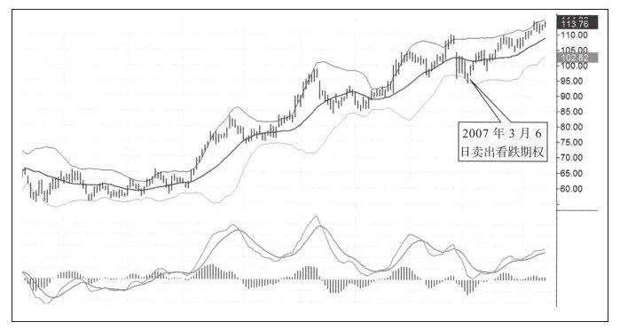
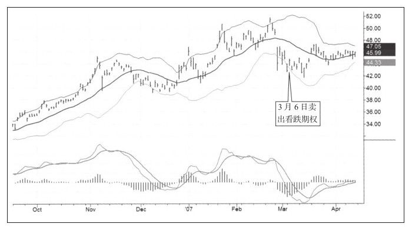

在期权交易中最令人紧张、最有前途但也最危险的领域是裸卖空。存量卖空者有股票作为担保，但裸卖空是凭空创造出期权。保护他们的只有账户现金、卖空技巧以及完全遵守截短损失获取收益的原则。
在写本节的时候，我向精通裸卖空的迪安·巴菲林博士要了一些实战案例，她谈起喜爱的卖空交易时滔滔不绝：
我正在做很多无趣的期权交易，它很简单，我甚至可以教会我女儿做这项工作，我对她说，去上艺术学校时，你会认得这些线，当这些线停止下跌时，就该做空看涨期权。
我喜欢赚钱不喜欢亏钱。最让人高兴的事情是卖出了到期时一文不值的期权。我曾经把我的交易清单给一些会计看，他们说这有问题，上涨正在结束。我不得不向他们解释说我已经卖出了期权，它们到期时将一文不值。
我喜欢裸卖空。存量卖空的问题是，尽管在期权上挣了钱，但在股票上却亏了钱，我不喜欢这种方式。我想要持有股票，但它正在下跌，当它不再下跌时我就卖出看跌期权并获得10%的期权费。
我就像赌场里的荷官，赚取那些非常自负的人的钱，这些轻浮的人来来往往，穿金戴银。他们在我的桌子上一掷千金向我索要小黄塑料片。轮盘不停地转，他们很以此为乐，但在某个月第三周周五轮盘停止时，我全盘通吃。我忍住不让自己笑出来，不向他们表露此刻我赚了他们的钱我有多开心。
我是个心理学家，但无论我给病人什么样的建议，保险公司都会给他们相同的赔付率。
交易是唯一一门聪明与回报成正比的生意，所以你必须努力工作。人们总让我教他们如何卖出期权，我给他们一些股票让他们追踪并告诉他们做好股价和对应期权价格的每日记录。没有人把这项工作做好，哪怕做好一个月的也没有，都是懒惰的原因。
股票可能会上涨、下跌或横盘整理。如果买入股票或期权，你只有一条赚钱的路，但亏钱却有两条路。当我卖出期权时，我有两条路赚钱，有时甚至是三条。卖出期权的时机是当股价不再运动时，随后股价运动得越剧烈，市场给你的回报越高。
现在有两个简单的期权交易案例，都是在非常知名的股票上展开的：ATI（阿利根尼技术公司）和CHL（中国移动）。
2007年3月6日，这两只股票都走出了我喜欢的模式。因为我的计算机不好，做不出电子扫描系统，所以通常我通过手动寻找此类图表模式。
股票市场2月27日出人意料地大跌并正在形成底部，因为波动变大，所以期权费更高，我喜欢这样，因为卖出更贵的商品比卖出便宜商品要好，价格中蕴含着更大的利润（见图8-7）。

当时如果买入股票，我可以赚更多钱，因为现在的股价是113美元，但当时我需要用97 000美元来冒险，因为想在晚上睡个好觉而不想在担惊受怕中度日，所以我选择使用期权。事实上，我在高位不断做空看涨期权赚过更多钱，这与大众增加股票头寸的方法有所不同。
我在同一天以相同的原因卖出了中国移动的看涨期权（见图8-8）。当时股价是44.5美元，6月份执行价为45美元的期权价格是4.8美元。我选择6月份的原因是计算我挣10%需要多长时间，这个时间长度我乐于接受。卖出时我的想法是在3个月内股价不会跌破45美元。如果跌破45美元，我就买入正股，相当于低于现价10%的价格买入。

人们总问我，既然卖出期权如此之好，为什么没有更多的人做这件事？我认为这是由于大多数期权交易者喜欢赌博，他们不断寻找机会，但很少有像下棋一样的耐心。买入期权的成本很低（大约是正股价的10%），但是卖出期权却需要相当数量的现金，至少10万美元，有些需要25万美元和两年经验。经纪公司说过会保护投资人，但是他们会怂恿你买入那些很可能亏钱的期权，他们不让你做出亏钱概率小的卖出期权的决定。
如果你卖出一张看涨期权，可能发生的最糟糕的事情是以行权价买入股票。这能有多糟糕？成千上万的投资人和交易者是不是每天都在做买卖股票这件事？所以我只是卖出我乐意以我喜欢的价格买入正股的股票看涨期权。不同的是，我并没有把资本放入市场而赚钱，事实上我用这笔钱持有债券，赚取利息。难道这就是裸卖空最糟糕的事情？你在波动的股票市场结束一次空头头寸，是不是和很多专家交易者做的完全一样？我喜欢期权是因为我能以此赚钱，最糟糕的事情对我来说是完全能接受的。